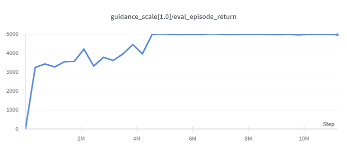
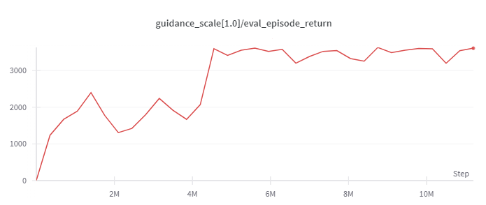

QGPO¶
Overview¶
Q-Guided Policy Optimization(QGPO), proposed in the 2023 paper Contrastive Energy Prediction for Exact Energy-Guided Diffusion Sampling in Offline Reinforcement Learning, is an actor-critic offline RL algorithm based on energy-based conditional diffusion model.
Three key components form the basis of the QGPO algorithm: an unconditional diffusion model-based behavior policy, an action-state value function driven by an energy function, and an intermediate energy guidance function.
Three key components form the basis of the QGPO algorithm: an unconditional diffusion model-based behavior policy, an action-state value function driven by an energy function, and an intermediate energy guidance function.
The training of these three models requires two serial steps: first by using offline data sets to train the unconditional diffusion model-based behavior policy until convergence, and then alternately train the action-state value function and the intermediate energy guidance function until convergence.
Training the action-state value function requires the use of a training objective based on the Bellman equation. In order to train the intermediate energy guidance function, a method called Contrastive Energy Prediction (CEP) is proposed, which is a contrastive learning objective that focuses on maximizing the mutual information between the energy function and energy guidance across identical state-action pairs.
Quick Facts¶
QGPO deploys as an offline RL algorithm.
QGPO works as an Actor-Critic RL algorithm.
QGPO’s Actor is an energy-based conditional diffusion model constructed on an unconditional diffusion model and an intermediate energy guidance function.
QGPO’s Critic is an action-state value function based on an energy function.
Key Equations or Key Graphs¶
Using Kullback-Leibler divergence as a constraint to optimize the strategy in reinforcement learning, the optimal strategy \(\pi^*\) satisfies:
Here, \(\mu(a|s)\) functions as the behavior policy, \(Q_{\psi}(s,a)\) acts as the action-state value function, and :math:eta` is the inverse temperature.
We can regard it as a Boltzmann distribution over action \(a\) with the energy function \(-Q_{\psi}(s,a)\) and temperature \(\beta\).
In general terms, by denoting \(a\) with \(x0\), the target distribution is as follows:
This distribution can be modeled by an energy-based conditional diffusion model:
In this case, \(q_t(x_t)\) is the unconditional diffusion model, and \(\mathcal{E}_t(x_t)\) represents the intermediate energy during the diffusion process.
When inferring from the diffusion model, the energy-based conditional diffusion model’s score function can be computed as:
where \(\nabla_{x_t} \log q_t(x_t)\) works as the unconditional diffusion model’s score function, and \(\nabla_{x_t} \mathcal{E}_t(x_t)\) acts as the score function of intermediate energy, referred to as energy guidance.
As an energy-based conditional diffusion modeled policy, QGPO comprises three components: a behavior policy based on the unconditional diffusion model, an energy function based action-state value function, and an intermediate energy guidance function.
Thus, the training process of QGPO comprises three stages: unconditional diffusion model training, energy function training, and energy guidance function training.
Initially, the unconditional diffusion model receives training from an offline dataset by minimizing the unconditional diffusion model’s negative log-likelihood, which switches into minimizing the weighted MSE loss over score function of the unconditional diffusion model:
where \(\theta\) is the parameters of unconditional diffusion model.
In QGPO, the behavior policy over action \(a\) conditioned by state \(s\) is defined as the unconditional diffusion model, it can be written as:
where \(x_0\) is the initial state, \(x_t\) is the state after \(t\) steps of diffusion process.
Secondly, the state-action value function can be calculated using an in-support softmax Q-Learning method:
Here \(\psi\) refers to the parameters of the action-state value function, and \(\hat{a}\) is the action sampled from the unconditional diffusion model.
Thirdly, the energy guidance function receives training by minimizing the contrastive energy prediction (CEP) loss:
In this case, \(\phi\) denotes the parameters of energy guidance function.
After training, the action generation of the QGPO policy is a diffusion model sampling process conditioned on the current state, which combines the output of both unconditional diffusion model-based behavior policy and the gradient of the intermediate energy guidance function. Its scoring function can be calculated as:
Then use DPM-Solver to solve and sample the diffusion model and obtain the optimal action:
Implementations¶
The default config is defined as follows:
- class ding.policy.qgpo.QGPOPolicy(cfg: EasyDict, model: Module | None = None, enable_field: List[str] | None = None)[source]¶
- Overview:
Policy class of QGPO algorithm Contrastive Energy Prediction for Exact Energy-Guided Diffusion Sampling in Offline Reinforcement Learning https://arxiv.org/abs/2304.12824
- Interfaces:
__init__,forward,learn,eval,state_dict,load_state_dict
Model¶
Here we provide examples of QGPO model as default model for QGPO.
- class ding.model.QGPO(cfg: EasyDict)[source]¶
- Overview:
Model of QGPO algorithm.
- Interfaces:
__init__,calculateQ,select_actions,sample,score_model_loss_fn,q_loss_fn,qt_loss_fn
- __init__(cfg: EasyDict) None[source]¶
- Overview:
Initialization of QGPO.
- Arguments:
cfg (
EasyDict): The config dict.
- _backward_hooks: Dict[int, Callable]¶
- _backward_pre_hooks: Dict[int, Callable]¶
- _buffers: Dict[str, Tensor | None]¶
- _forward_hooks: Dict[int, Callable]¶
- _forward_hooks_always_called: Dict[int, bool]¶
- _forward_hooks_with_kwargs: Dict[int, bool]¶
- _forward_pre_hooks: Dict[int, Callable]¶
- _forward_pre_hooks_with_kwargs: Dict[int, bool]¶
- _is_full_backward_hook: bool | None¶
- _load_state_dict_post_hooks: Dict[int, Callable]¶
- _load_state_dict_pre_hooks: Dict[int, Callable]¶
- _modules: Dict[str, Module | None]¶
- _non_persistent_buffers_set: Set[str]¶
- _parameters: Dict[str, Parameter | None]¶
- _state_dict_hooks: Dict[int, Callable]¶
- _state_dict_pre_hooks: Dict[int, Callable]¶
- calculateQ(s, a)[source]¶
- Overview:
Calculate the Q value.
- Arguments:
s (
torch.Tensor): The input state.a (
torch.Tensor): The input action.
- q_loss_fn(a, s, r, s_, d, fake_a_, discount=0.99)[source]¶
- Overview:
The loss function for training Q function.
- Arguments:
- qt_loss_fn(s, fake_a)[source]¶
- Overview:
The loss function for training Guidance Qt.
- Arguments:
s (
torch.Tensor): The input state.fake_a (
torch.Tensor): The input fake action.
- sample(states, sample_per_state=16, diffusion_steps=15, guidance_scale=1.0)[source]¶
- Overview:
Sample actions for conditional sampling.
- Arguments:
states (
list): The input states.sample_per_state (
int): The number of samples per state.diffusion_steps (
int): The diffusion steps.guidance_scale (
float): The scale of guidance.
- score_model_loss_fn(x, s, eps=0.001)[source]¶
- Overview:
The loss function for training score-based generative models.
- Arguments:
model: A PyTorch model instance that represents a time-dependent score-based model. x: A mini-batch of training data. eps: A tolerance value for numerical stability.
- select_actions(states, diffusion_steps=15, guidance_scale=1.0)[source]¶
- Overview:
Select actions for conditional sampling.
- Arguments:
states (
list): The input states.diffusion_steps (
int): The diffusion steps.guidance_scale (
float): The scale of guidance.
- training: bool¶
Benchmark¶
environment |
best mean reward |
evaluation results |
config link |
comparison |
|---|---|---|---|---|
Halfcheetah
(Medium Expert)
|
11226 |

|
d3rlpy(12124)
|
|
Walker2d
(Medium Expert)
|
5044 |
 | d3rlpy(5108)
|
|
Hopper
(Medium Expert)
|
3823 |
 | d3rlpy(3690)
|
Note: the D4RL environment used in this benchmark can be found here.
References¶
Lu, Cheng, et al. “Contrastive Energy Prediction for Exact Energy-Guided Diffusion Sampling in Offline Reinforcement Learning.”, 2023; [https://arxiv.org/abs/2304.12824].